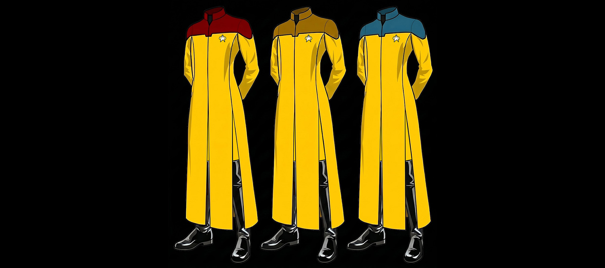

Navetta Asimov, Bacino spaziale, verso le stelle...
Fa parte del fato dell'universo destinato a te fin dal principio.
Ogni cosa che ti accade è parte del grande tutto.
(Marco Aurelio)
Sapevo che doveva esserci una fregatura da qualche parte.
Al RE DE LEONE non è andata giù la sparizione di tutto il Chinotto dalle cantine dell'Accademia: accontentarsi di quello replicato deve averlo messo di cattivo umore, non è vero Geppo?
E così, eccoci qua: promosso Sottotenente due giorni dopo il diploma, con il comando di una nave TUTTA MIA e la possibilità di fare il diavolo a quattro per il Quadrante Alfa e cosa mi capita? UNA CLASSE MIRANDA! Vecchia di almeno 80 anni, uno SCASSONE volante... la nostra casa per i prossimi due o tre mesi (è tanto se non si sfascia prima). Ma questo è niente: sai come si chiama, vecchio mio? "AFRODITE!!"
E si aspettano che io vada in giro orgoglioso di una nave con un nome simile??!?!
"Ehi voi, Klingon, Borg e viscidi Cardassiani: sono il capitano Giuseppe Alighieri della nave federale… Afrodite… Arrendetevi o... (... oh merda!").
Questa me la pagano, tutti e due: già, perché scommetto che anche la caitiana ci ha messo la zampina!
Una buona notizia c'è: Frruuu è dei nostri! Anche Bob De Niro. Ma nessun altro che conosciamo.
C'è una decisa predominanza umana fra i capi dipartimento, a parte la sezione medica. Chissà se...
Meno male, il viaggio in navetta è finito: guarda Geppo, eccola là!
Però… Tutto l'equipaggio ci sta aspettando: raddrizza i baffi, vecchio mio e muso in alto! La prima impressione è quella che conta!
USS Afrodite, hangar navette: dove tutto comincia.
che può darci la nostra civiltà.
(Oscar Wilde)
- Non si azzardi a scendere con quegli stivali infangati! Ho appena finito di pulire i corridoi e non voglio ricominciare daccapo!
- Signora… Io sono IL CAPITANO GIUSEPPE ALIGHIERI, al comando di questa nave!
- Ernestina Scramiglio, addetta alle pulizie, molto piacere. Infili le pattine.
- Come si permette? E poi cosa sono queste... pattine?
- Io non sono il tipo che si fida della tecnologia, caro il mio Capitano! Quando ci sono io è tutto un lavorio di spazzoloni e secchi d'acqua alla cara vecchia maniera del 23° secolo!
Allora sì che tutto andava bene! E con le "pattine" ai piedi, ci si risparmia di dare la cera nei corridoi. Sarà meglio che ne dia l'avviso all'equipaggio...
- Signora Scramiglio...
- Mi chiami pure Ernestina, caro, non facciamo complimenti fra noi.
- Signora Ernestina: l'unica cosa che mi viene in mente a proposito della sua presenza qui, al posto della parata dei capi sezione, è che 'qualcuno' deve avere un grande senso
dell'umorismo. Devo ammettere però di non essere al momento in grado di apprezzare lo scherzo. Fra le varie ricerche di codici a barre e le mappe topografiche che ci hanno fatto studiare,
non mi risulta da nessuna parte l'impiego da parte della Flotta Stellare di manovalanza per le pulizie.
- Non siamo conosciuti, bello mio, ecco tutto. Nessuno parla dei camerieri, eppure noi siamo quelli che fanno tutto il lavoro sporco. Ho delle referenza eccellenti per sua conoscenza:
ho lavorato per la meravigliosa Enterprise, del Capitano James T. Kirk per tutti i cinque anni di missione...
- No! LEI è quella Ernestina Scramiglio? Quella che ha scritto 'Pulire è il mio peccato: i cinque anni migliori della mia vita' e
'Và dove ti porta il naso: dove nessuna scopa è mai arrivata prima'
- Naturalmente. Anche il seguito 'Io non sono Spock ma Ernestina Scramiglio'.
- Deve farmi un suo autografo, Ernestina! (posso chiamarla Ernestina?). È un onore averla con noi.
- Grazie, caro. Naturalmente il gatto dovrà restarsene nella sua gabbietta.
- Mi chiami Beppe, tutti i miei a... COSA?! Non se ne parla. Non mi separo mai da Geppo, ma vedrà che...
- Gli animali sporcano, e questo gatto non mi sembra diverso dagli altri…
- Geppo È DIVERSO dagli altri, glielo assicuro. Non farà troppi danni, vero, Geppo? (e smettila di sogghignare, non lo vedi che è una vecchietta inoffensiva?).
- Comunque la parata dei suoi capi... sì insomma quelli lì... non si può fare, sono ancora tutti in licenza: ci sono solo dei guardiamarina ubriachi e - ah sì - il Consigliere di bordo. Lui c'è.
- Quale Consigliere? Io non voglio Consiglieri!
- Lo vada a dire a lui, è sul Ponte di Comando a cercare di psicanalizzare qualche tecnico.
- Glieli dò io i consigli! Ernestina siete allergica all'aglio?
- No, perché?
SVVVOSHHHHHH!
USS Afrodite, Plancia.
perché i saggi vi possano vivere.
(Oscar Wilde)
- Capitano in Plancia! Atccciuuu!
- Comodi, comodi. Qualcuno di lor signori è allergico all'aglio?
- Aaaaat... cciuuuuu!
- Benvenuto sulla Afrodite, Capitano Alighieri! Sono il Consigliere di bordo, Stanislao Becco. Quando avrà un momento di tempo vorrei poter parlare con lei:
sono veramente affascinato dal suo background culturale e dalle sue origini...
- Signor Becco...
- Aaatccciiuiuuu!
- Uno dei motivi per cui ho richiesto specificatamente questo incarico è per poterla conoscere meglio e lavorare fianco a fianco con un vero diavolo…!
- Signor Becco...
- Come sono i suoi rapporti con sua madre? Ha del risentimento verso suo padre? Sogna mai di salire delle scale ripide?
- Lei non è allergico all'aglio, vero Signor Becco?
- Può chiamarmi Stan. No, non lo sono.
- (Accidenti.) Farò un giro della nave. Faccia sapere ai ritardatari che ho intenzione di partire in orario. I convenevoli a dopo.
- Ma capitano???
SVVVOSHHHHHH!
a volte lo sono le risposte...
(Oscar Wilde)
- Beppe! Non posso crederci sei tu?! Mi scusi, signore: Guardiamarina Robert F. De Niro, a rapporto, Capitano!
- Così va molto meglio... e piantala, Bob, siamo da soli adesso!! È fantastico, non è vero?
- WOW! Meglio di qualunque sala ologrammi... la mia postazione in Plancia è favolosa, pilotare la tua nave sarà un onore, Capitano... Su questo Ponte ci sono gli alloggi Ufficiali,
stai andando a visitare il tuo nuovo alloggio?!
- Già... Bob, ma non hai niente da fare?
- Perché? Cosa mi stai nascondendo, vecchio cornuto di un diavolo?
- Bob, passi per il cornuto e per il diavolo ma vecchio...
- AH! Ecco perché volevi controllare che le operazione di sbarco del tuo LETTONE A TRE PIAZZE filassero lisce!!! Che demonio! E così la storia continua!
- Bob...
- Tu e miss Silicio siete ancora treno e montagna, eh? A vederti non ti si sarebbe mai creduto un tipo fedele, Beppe ma CAVOLI! Ti piace sempre dormire in mezzo?
- Io dormo SEMPRE al centro, Bob... Frruuu SOTTO il letto - sulla sabbia - e Geppo SOPRA il baldacchino. A noi piace così. Ti spiace scusarmi? Voglio controllare che i "gerani"
siano a posto per quando arriverà...
- Sei un vero diavolo romantico, Beppe!
- Guai a te se lo dici in giro, Bob! Che figura farei con il resto dell'equipaggio?
USS Afrodite, Plancia.
e non può finire meglio.
(Oscar Wilde)
- Sig. Renzi, nessuna novità sul caso "Oryza Sativa"? Lei e Da avete trovato il responsabile dei chicchi di riso sparsi per tutta la nave?
Un'altra lamentela di Ernestina e finiamo tutti sul libro nero...
- Capitano, ho ascoltato finora ben 117 membri dell'equipaggio e tutti affermano di aver ricevuto ordini precisi dalla Flotta... sono controfirmati!
- Gli ordini?
- No, Signore, i chicchi di riso!
Meno male che i Capitani di astronave sono di forte tempra. Naturalmente, c'è solo una cosa da fare:
- Numero Uno in Plancia! Ah, sei qui, piccola! Dunque, abbiamo uno o due quintali di riso, firmati chicco per chicco... pensaci tu!
- Non preoccuparti Bep... Capitano! Stasera riso fritto alla Grande Madre!
- Bene, e ora che abbiamo sistemato le cose serie, pensiamo agli ordini dell'Alto Comando...
Messaggio del Capitano Alighieri all'equipaggio: si prega fare attenzione (per il vostro bene).
Su insistenza del Comando di Flotta e su mio suggerimento effettueremo una sosta al Disney Planet del Quadrante Alfa. Sono previsti turni a rotazione per TUTTO l'equipaggio
(vulcaniani riottosi compresi - non faccio nomi) ed è vietato rientrare a bordo dell'astronave senza il "morale alto" e un souvenir del luogo.
Divertitevi (soprattutto la Sicurezza) perché potrebbe essere l'ultima occasione per qualcuno di voi, data la missione che ci attende. Alighieri, chiudo.
- Capitano a JT: approfittate di questa sosta per fare quella revisione ai motori. Vi assegnerò l'ultimo turno di licenza, fatene buon uso.
- Si, Capitano.
Disney Planet.
e ne vivono piacevolissimamente.
(Oscar Wilde)
- Andiamo Geppo: tu e Frruuu farete il primo turno con me e niente storie! Su, avanti! Sono mesi che non aspetto altro che andare al "CAPITANO KIRK E IL PLANETOIDE MALEDETTO"...!
Non avrete paura di fare quattro giri della morte a warp due...?!!
- Bella giornata, Capitano! Buon divertimento!
- Altrettanto. PORCA EVA, sbrigatevi voi due se non volete che vi lasci con Da Nee e Sàpek... mi meraviglio di te, Frruuu, dove è finito il tuo ardito coraggio da horta?!
- Va bene, sul wormhole dell'amore ci vengo ma dopo aver mangiato "pesce e patatine"... sei sicura che non vuoi anche dello zucchero filato?
Ok, Ok! No, Geppo, al labirinto di Alice non ci vai, l'ultima volta il VERO STREGATTO ti ha rincorso dentro il Phanton Manor e non credo che qui dentro l'abbiano scordato.
Piuttosto, guarda qui in giro se vedi la vulcaniana,
scommetto le mie corna che ha delegato qualcun altro per comprarle un souvenir... A proposito: quali orecchie vuoi da indossare, Frruuu, quelle di Minni o quelle di Topolino?
Ma certo che ci sono della tua misura!! Guarda, Da Nee ha preso un biglietto della Lotteria Ferenghi: XLVI... speriamo bene, un po’ di Nutella non replicata di vero cioccolato ci farebbe comodo
per i momenti bui! Anche un soggiorno su RISA tutto pagato di due settimane non sarebbe male, eh piccola?
- No, grazie, preferirei un pupazzo a forma di gatto: hai presente "LUCIFERO", quello del film di Cenerentola?
- Buongiorno Capitano!
- Salve JT, come va il morale?
- Ottimo, Signore, siamo tutti molto più rilassati!
- Ve lo meritate, avete fatto un buon lavoro con tutte quelle boe. Così anche lei colleziona pupazzi?
- Da cosa lo ha capito, Capitano?
- JT, chiunque tenga un MEGA Paperino sopra la propria consolle operativa o è un collezionista di pupazzi...
- Beh...
- ... oppure fa parte del mio equipaggio!
- Se ci sbrighiamo riusciamo a vedere lo spettacolo un'altra volta... uff, di nuovo Smith con Vanian... no è Kiss Mey! Oppure no! Ragazzi, e poi dicono che noi diavoli siamo...
Buon per lui che D'Accardi non è nei paraggi.
- Alt, come non detto, eccolo lì. Dì Frruuu, non è il nostro Vice della Sicurezza quello che si sta tuffando nel lago...? Sì, quello con il cappello da Pluto?!
Voglio proprio sapere quale storia mi propina questa volta...
Attenti a sinistra, uomini, c'è Becco! E se lui è laggiù può il nostro Capo Operazioni essere lontano? Infatti! Geppo, vai a salvare Peter, ha diritto anche lui ad un po’ di tranquillità.
Dobbiamo anticipare quel torneo di scacchi di cui parliamo da giorni e organizzare una bella gara di ballo, dopodiché scaraventiamo Ernestina nelle braccia del Consigliere e tutto finirà in gloria.
Ma certo, nessuno resiste al Parmigio!
Un regalo per me, Piccola? Una maglietta con su scritto: DON'T WORRY... Be Happy! Grazie, cocca, è una meraviglia! La indosserò subito! È un motto grandioso per una nave come la nostra, non ti pare?
- Frruuu, non ti girare troppo velocemente verso sinistra: sì, sotto la prima arcata. Quell'umano ti sta fissando da almeno un'ora... e che sguardo! Lo conosci?
- Gino Ciccozzi... no, non mi pare di aver mai avuto il piacere. Un vecchio amico? Ah... non preoccuparti, piccola, se solo si avvicina lo stendo.
Geppo, restale vicino, ci penso io a... come sarebbe... è un membro dell'equipaggio? Del nostro equipaggio?! Una tua vecchia fiamma, tendente alla depressione per il tuo abbandono che ha cercato
a più riprese di suicidarsi, offrendosi volontariamente in missioni suicide? Beh, perché no? è quello che ci vuole su una nave come la nostra, se non sono matti non li vogliamo, giusto?
- Potrebbe farci comodo un volontario. Sei sicura di non provare più niente per... andiamo, sai che puoi dirmi tutto!
- Va bene, come non detto. Torniamo a bordo con i souvenir, all'improvviso ho voglia di un po’ di Nutella...
USS Afrodite, Ponte di Comando. Tre giorni dopo l'atmosfera è cambiata.
- Bob, quando arriveremo alle coordinate stabilite?
- Con questa rotta, 30 minuti, Capitano.
- Consigliere, non ho voglia di sentire ancora le sue recriminazioni: la sosta è servita sia per risollevare il morale dell'equipaggio sia per risistemare la nostra Sala Macchine.
Non mi ha sentito fare le congratulazioni all'Ingegnere Capo? Perciò va tutto bene: quanto ai brufoli, spariranno presto o tardi, purché si mangi in bianco per un po' di tempo.
Per fortuna, il risotto non ci manca...
- Capitano, con tutto il rispetto, io trovo la vostra decisione di organizzare dei Nutella Party per tutto l'equipaggio assolutamente da incosciente!
Capisco che dopo aver vinto il secondo premio della lotteria Ferengi eravate un tantino su di giri, ma...
- Che ne potevo sapere io che la Nutella non replicata di vero cioccolato fa venire i brufoli? Non esiste niente del genere da dove vengo io!
E poi la dottoressa T'Mik sta lavorando ad una cura appropriata.
- Appropriata per 40 tonnellate di veleno puro? Il computer ha segnalato la condizione gialla proprio...
- È stata la signora Ernestina a far scattare l'allarme per quello che ha combinato in Infermeria. A proposito: invece di restare qui a tormentare il suo Capitano
perché non prova a psicanalizzare la nostra addetta alle pulizie? Si è messa in testa di farci girare tutti con le pattine per lucidare i corridoi, e mi tormenta
per i chicchi di riso che trova in giro. Vuole lucidare tutti i pannelli di controllo con la scusa che sono impolverati e così provoca danni a non finire!
- La signora Ernestina è un valido aiuto in una nave governata dal caos... e da un Capo Operazioni che non è mai al suo posto... Se fossi in lei, Capitano...
- LEI non è ME, Consigliere. OH, parlando del diavolo... Benvenuto, Capo Jacket! Vuole gentilmente sedersi alla sua postazione, visto che anche oggi ha 5 minuti di ritardo?
- Mi scusi Signore, stavo pensando se era il caso di andare a cambiarmi l'uniforme...
- Lasci stare, se la cambierà più tardi. Lasci stare il caffè per terra, così Ernestina avrà qualche cosa da fare.
(Una nuova strategia, Stan: lasci in pace il mio Capo OPS e vada a sondare il suo vice, Boregh. Un klingon capace di rovesciare caffè sul suo superiore merita un esame approfondito, no?)
- No, Capitano, non potrei mai lasciarla! lei ha bisogno di MEAAAAGGGHHH!!!
- Stan! Rael, ci pensi lei! (Bel lavoro, Geppo! Però è meglio che continui a restare invisibile finché lui è qui...). Lo faccia accompagnare al suo alloggio:
i nostri dottori hanno già abbastanza problemi.
- Capitano! Ho localizzato una sonda proveniente dalla Cassiopea: i codici corrispondono!
- Bel lavoro, Renzi! Frruuu...?
- Pronti, Capitano! Sala Teletrasporto, 2 agganciate la sonda e teletrasportatela al laboratorio sul Ponte 4. Renzi, Da: è tutta vostra, dateci sotto!
- Ora, se quei due si danno da fare in fretta noi...
- Capitano, astronave ferengi in rotta di intercettazione...
- Frequenze di chiamata aperte (e che diavolo vogliono questi adesso?). "Sono il Capitano Alighieri della astronave federale Afrodite: comunicate le vostre intenzioni."
- Non ricevono le nostre comunicazioni, Signore.
- Rael, il problema è nostro o loro?
- Non so, Sig. Frruuu. Continuano ad avvicinarsi. Un momento! La consolle segnala un circuito in avaria...
- Alighieri a Ingegneria: non è il momento di darmi problemi, JT. Cosa sta succedendo?
- Atcciuummmmm!
- (Castell!) Si, Capitano?
- Atcciummmmm!
- (La smetta, Castell! Vada subito in Infermeria, non ne posso più del suo raffreddore!) Capitano, sto facendo il possibile per ricalibrare i circuiti di inizializzazione...
- Faccia in fretta!
- Si, Signore!
- La nave Ferengi sta per sparare!
- Alzare gli scudi!
- Si, Signore... Impatto fra 10 secondi... Mancati! Di nuovo! Ancora!
- Hanno una pessima mira questi ferengi...
- Dica piuttosto che sono delle vere scamorze, Capo!
- Suggerimenti?
- Capitano, c'è qualcosa di insolito in quelle raffiche: credo che stiano cercando di comunicare. Le sequenze di colpi sembrano seguire uno schema regolare che si ripete.
Ricordano l'alfabeto morse...
- Capitano, il Sig. Da ha ragione: credo che dicano "SOS SOS". Potremmo comunicare tramite segnali luminosi con le luci di navigazione, usando lo stesso codice.
- Ottimo lavoro, Capo Jacket! Sig. Da, ora può andare in laboratorio! Sbrighiamoci, voglio sapere con chi abbiamo a che fare!
MESSAGGIO DECIFRATO: astronave ferengi "DEPOSIT", NO intenzioni ostili... gravi danni sistemi, chiediamo... medico.
- Molto bene: Frruuu, questo è un lavoro per il Number One! Scegli una squadra e valli a stanare: non credo che siano pericolosi in quelle condizioni ma è meglio non fidarsi!
Li terrete a bada mentre noi andiamo a cercare la Cassiopea. Ci ritroveremo il prima possibile...
- Si, Signore! è l'ora dei vice! Sig. D'Accardi, Dr. Van Bajark, Sala Teletrasporto 3! Sicurezza, tre uomini a rapporto.
- Alighieri a Laboratorio 4 : come vanno le vostre ricerche?
- Sono Renzi, Signore: abbiamo scaricato tutte le informazioni della sonda ma non riusciamo a decifrarle. Ritengo però che la Cassiopea non sia troppo distante da questo luogo!
- Ecco perché quelle scimmiette sono da queste parti! Continuate; Alighieri, chiudo.
- Signore, comunicazione da parte della squadra di sbarco: a quanto pare i Ferengi non avevano mai visto una horta prima d'ora!
- E sono loro ad averci rimesso! Smettetela con le risatine, uomini! State parlando del nostro Numero Uno! Com'è la situazione, Rael?
- Stanno curando il ferito e controllando i loro sistemi di navigazione: sembra anche che uno della sicurezza sia stato ferito.
- Così imparate voi e Chris a dare quei soprannomi pazzeschi ai vostri uomini...! A quanto pare i cornetti rossi e le zampe di coniglio non sono serviti a niente, mh?!
La iella ci perseguita non c'è che dire. Suggerimenti?
- Laboratorio a Plancia: Capitano, abbiamo le informazioni ma i nostri sensori non ricevono bene... invio le coordinate direttamente al timoniere.
- Stia attento, Signor De Niro, non siamo del tutto sicuri...
- Capitano, visto che i problemi tecnici sono iniziati con l'avvicinarsi della Deposit forse dovremmo restare qui e controllare quest'area di spazio finché la squadra non ha terminato.
- Bene, Capitano!
- Capo Jacket, fintanto che i nostri compagni li tengono a bada, noi possiamo terminare la nostra ricerca... È pericoloso, è vero, ma il pericolo è il nostro mestiere.
Bob, segui le coordinate trovate dai nostri scienziati... e prega PER LORO che le informazioni siano giuste!
- (No, Geppo, secondo me alla lunga un Consigliere può esserci utile: magari uno scambio di prigionieri o per farlo assimilare dai Borg...)
- Ci siamo, Signore! Eccola: è lei!
- La USS Cassiopea... Ragazzi, siete i migliori! Alighieri a Laboratorio: voglio quei manufatti richiesti da Stark TUTTI INTERI, mi sono spiegato? Non mi deludete!
- Tenetemi informato, chiudo.
- Sono Da, Capitano: sappiamo già cosa cercare. Una teca di duralluminio che emette una particolare radiazione nella banda EM. È possibile rilevarla ed agganciarla con il teletrasporto.
Ora la cercheremo e la teletrasporteremo a bordo.
(Avanti, Geppo, sono sicuro che Frruuu se la sta cavando bene: semmai è la sicurezza a darmi da pensare... secondo te, Cip e Ciop sono nomi da guardie? Devo ricordarmi di parlarne con...)
- Ci siamo, Signore! Abbiamo la teca e i manufatti sono dentro!
- Bel lavoro, Renzi! E adesso di corsa dalla Deposit! Indietro tutta, Bob, fattore 6: attivare!
- Si, Signore!
- Infermeria, stiamo per teletrasportare la squadra di sbarco, pronti per l'emergenza! Rael...
- Sala Teletrasporto 2, cinque da teletrasportare (e guai a voi se non sono interi!).
- Mi piace il suo stile, Rael.
- Grazie , Capitano. L'Infermeria è pronta a riceverli, Signore.
- Laboratorio a Plancia: Capitano, non ci crederete mai!
- Vuole scommetere, Renzi?
- La chiusura della teca ricorda molto i codici a barre. Non è buffo?!??
(Silenzio di tomba).
- Capitano? Non lo ritiene buffo?
- Aprite quella teca e mettete i manufatti al sicuro!
- Si, Signore, certo Signore, subito Signore!
(Quei due assieme sono una forza della natura...)
- Capitano, la squadra di sbarco è pronta a tornare: il ferengi ferito è con loro.
- Avvertite la Dottoressa, Rael. Andate anche voi e tenete gli occhi aperti, mi spiego?
- Perfettamente, Capitano.
- Mi scusi, Signore.
- Dica pure, Capo.
- Vorrei andare in laboratorio per studiare i manufatti.
- Va bene, Signor Jacket. Cerchi di non incontrare Becco, mentre scende...
- Oh no, Capitano!... Salve, Sig. Frruuu.
- Bentornata, piccola! Dimmi tutto!
- Quei #@*�@//[#§!! di Ferengi e quel Damon nano che...
- Va bene, va bene. E poi?
- Sulla loro nave non funziona più niente e non riusciamo a capire perché. Però, Beppino, di una cosa sono sicura: scommetto una barra di granito ricoperta di cioccolato
che quelli stanno cercando la stessa cosa che stiamo cercando noi, ci puoi scommettere le tue corna...
- I manufatti sono nostri ormai, Frruuu: e se entrassimo nella Nebula di cui ti hanno parlato loro? Potremmo depistarli e filarcela.
- Ma Beppino, il rischio è grande...
- Nonostante i loro guasti, quell'astronave è grande due volte la nostra (almeno) e io non intendo perdere il comando proprio adesso...
Diamine, la nostra astronave funziona a meraviglia, no? Bob, traccia la rotta d'intercettazione per la nebula.
- Si, Capitano. La nebula risulta già avvistata: nome "PESSAIOCA", dimensioni variabili, ultima verifica...
- Bene così: curvatura 2... attivare. Così questa specie di zucchero filato sarebbe la Pessaioca, eh? Beh, in fondo perché no?
(Geppo... secondo te chi li sceglie i nomi delle Nebule? Voglio dire se tu fossi una Nebula ti piacerebbe se ti chiamassero "PESS...)
..... BUMMMM .....!!!
- Siamo entrati nella Nebula Pessaioca, Capitano.
- Grazie, signor Boregh. Oh, capo Jacket abbiamo sentito la sua mancanza... i manufatti?
- Ci stanno lavorando... mi è parso di sentire un'esplosione...
- Oh no, Capo: il Sig. Boregh è scivolato dalla sedia. Le dispiacerebbe prendere il suo posto?
- Salve D'Accardi: tenga d'occhio il ferengi e.... Consigliere... Come mai in Plancia? L'avevo mandata a riposarsi nel suo alloggio...
- L'avrei fatto, Capitano, ma le porte del mio alloggio non funzionano e così tutte quelle del Ponte 6!
- Non è il momento adatto, Becco, noi...
- Capitano, la consolle tattica non funziona!
- Signore, i motori non rispondono!
- Alighieri a Ingegneria: JT! COSA DIAVOLO STATE FACENDO? ANZI: COSA NON STATE FACENDO? QUI sta andando tutto in malora!
- Anche qui, Capitano! Vi mando subito qualcuno della manutenzione per le consolle, io sto lavorando sui motori...
Anche l'Infermeria risulta bloccata ma loro stanno peggio di noi, hanno Ernestina con loro!
- Finalmente una buona notizia! Cioè: ehm (beh, perché no? Io trovo che quella donna insopportabile abbia trovato pane per i suoi denti - e non sto parlando del mio Medico Capo!
Che provi a utilizzare i suoi spazzoloni nel territorio marcato da due vulcaniani e vedremo!). Ripensandoci, forse potrebbero aver bisogno di aiuto... i nostri medici, intendo.
- Non si preoccupi, Capitano, c'è il Guardiamarina Field fra loro, per questo sono al corrente della situazione: non è un tecnico, ma sa il fatto suo... sotto quei brufoli...
- Non è molto delicato parlare di brufoli in un momento del genere, Guardiamarina... si dia da fare!
- Si Signore! Chiudo.
- Non è stato molto gentile con il Signor Ta Nutri, Capitano... per non parlare del fatto che se il Guardiamarina Field è coperto di brufoli...
- La colpa è mia, lo so. Consigliere, ma lei non ha altre cose da fare in questo momento? Per esempio, una visitina alla Nebula Pessaioca?
Posso chiedere al Signor D'Accardi di accompagnarvi, lui ha molta simpatia per tutti e due...
- In confidenza: era proprio necessario entrare in una Nebula, Capitano? La più elementare logica...
- In confidenza, Becco: la logica non c'entra un fico secco! Avevamo bisogno di punti (non ha idea di quanto ci costi ad ogni turno la sezione scientifica!) e far rompere tutto era l'unico modo per...
- Ta Nutri a Plancia: Capitano, sono riuscita a riavviare i motori, solo quelli ad impulso, però
- In infermeria, la situazione è sotto controllo, anche se continuano a non avere le comunicazioni! Field ha riparato le porte e ora la Scramiglio è di nuovo in giro!
- Capitano: posso suggerirle di mandare due uomini della Sicurezza in Ingegneria? Voglio dire che le pulizie vengono effettuate in ordine alfabetico e siccome dopo
la INFermeria viene la INGegneria non le pare che...?
- D'Accardi, ha sentito il nostro Capo Operazioni?
- Subito, Capitano! Smith, Wesson1. a rapporto in Ingegneria, immediatamente! Non prendete i corridoi principali e state lontano dagli scopettoni (soprattutto tu, Smith, ci SIAMO CAPITI?)
- Lei e il Capo Rael avete molte cose in comune, signor D'Accardi... Lo stile, per esempio.
- Grazie per il complimento, Signore.
- Ta Nutri ad Alighieri: Capitano, a proposito della Nebula...
- E va bene, per farla contenta, JT: Bob, traccia la rotta per uscire dalla Nebula, possibilmente non troppo vicino a quei teppisti... Capo, li tenga d'occhio.
- Ci conti, Capitano!
- Infermeria a Plancia: Capitano, il Ferengi ferito non era proprio ferito, cioè lo era ma a posta: aveva inghiottito una miscela acida o qualcosa del genere che lo ha fatto star male
e lo ha fatto per potersi intrufolare sulla nostra nave e ha rubato i manufatti.. cioè: voleva rubarli... ma la Dottoressa l'ha messo a terra facilmente
e ora sta sempre qui - il Ferengi intendo - ed è di nuovo svenuto però è meglio che lo veniate a prendere...
- (questo non mi sembra il modo solito di parlare del nostro flemmatico Robert, Frruuu...)
- (No, questo è il modo di parlare di uno che ha avuto a che fare con Ernestina una volta di troppo, Beppino...)
- (Già). Bel lavoro, Signor Van Bajark. Capitano a laboratorio: Rael, ci siete? A rapporto in Infermeria, impacchettate il ferengi e chiudetelko nella Zona Detenzione 1.
- Ricevuto, Capitano.
- Bene, Numero Uno, è il tuo momento: ti lascio il comando, vado a controllare il prigioniero (e poi mi ritiro verso tu SAI DOVE a fare TU SAI COSA...).
Non mi distruggere la nave nel frattempo: è piccola e scassata lo so ma ormai mi ci sono affezionato...
- Vai tranquillo e divertiti!
USS Afrodite, Zona Detenzione 1.
- Così lei è il famoso Capitan Beppe...
- Piacere.
- Sono al corrente di quello che sta succedendo alla vostra nave! Noi scienziati Ferengi abbiamo avuto lo stesso problema non appena avvistata la Cassiopea, ma siamo riusciti a uscirne vivi!
Il terribile virus, conosciuto come GATES, vi ha preso in trappola! Vi offro un eccellente scambio, Capitano: ciò che avete trovato sulla Cassiopea per la soluzione del problema!
Lasciatemi tornare sulla mia nave con i manufatti e io libererò il computer della vostra nave una volta giunto a distanza di sicurezza! La mia parola...
- HA HA AHAHA AHAHAHAHAHAHAH AHAHAHAHAHAHAHAHAHAHAHA!!
(Che c'è? mai sentita una risata diabolica?)
- Rael, è tutto suo, si diverta, mi raccomando!
- Grazie, Capitano, era tanto tempo che volevo vedere fino a quanto si allungano le orecchie di un Ferengi...
- Faccia rapporto al Sig. Frruuu, se scopre qualcosa. (Sbrigati, Geppo, non voglio perdermi l'inizio della puntata, come al solito!)
USS Afrodite, Alloggio del Capitano FF.
"Oh Fridge, come sei crudele! Tutti questi nanosecondi lontano dal tuo programma mi hanno fatta quasi impazzire e mi aspettavo che tu ricambiassi i miei sentimenti... E invece tu...! Approfittare del mio calo di energia per sposare quella Dottoressa Tally Hor!" - "Prroook, è inutile, non so come spiegartelo (potrei metterci un po' di tempo) ma avresti dovuto capirlo ormai, io non amo né te né Tally! Io amo...
Dolori ai reni? Alito cattivo?
Nel 24° secolo non è più un problema!
Masticate una o due compresse di "ENGAGE",
e il dolore passerà in un nanosecondo!
E ora, prima di tornare alla seconda parte di "Anche Gli Hologrammi Piangono", approfittiamo di questo momento di pausa per dare una rapida occhiata agli occupanti
di questa splendida e caotica astronave.
Dunque: come tutti i giorni a quest'ora da almeno 90 anni, Beppe è nel suo alloggio e si sta godendo la puntata in barba alle Nebule;
Frruuu è al comando, con l'astronave Ferengi sempre più vicina, senza motori a curvatura per poter scappare e con i sistemi di bordo che stanno collassando uno dopo l'altro;
Il Capo Jacket ha approfittato del momento di bonaccia per andare nel suo alloggio a cambiarsi l'uniforme ma al momento di uscire le porte del suo alloggio si sono bloccate
di nuovo e si stanno preparando cinque minuti difficili per il nostro Peter;
Renzi ha approfittato anche lei della pausa del Capitano e ora è in laboratorio a festeggiare il suo compleanno con una ventina di intimi più Geppo
(che non ha mai avuto problemi di brufoli in vita sua e che al momento è pieno fino all'orlo di torta di Nutella);
Da Nee è l'unico che lavora;
Rael si sta "prendendo cura" del Ferengi, il quale chiede a tutti i costi una visita in Infermeria perché sta di nuovo male;
JT continua a riparare circuiti difettosi mentre l'unica informazione che appare sui suoi monitor è la seguente: "il sistema operativo è obsoleto, non conforme alle direttive:
AGGIORNARE?" e poi "ATTENDERE PREGO").
L'unico luogo al momento fuori portata del GATES è l'Infermeria (e perché mai? Forse questo misterioso GATES ha paura dei vulcaniani?). Così, a parte qualche strano messaggio
in cui si avverte che "le armi sono vecchie quindi le blocco", che gettano nel panico D'Accardi, la sezione medica è l'unica al sicuro.
Il Consigliere di bordo ha scoperto il guardiamarina Smith in dolce compagnia e sta cercando di psicanalizzarlo.
Infine, Ernestina, dopo aver ripulito la macchia di caffè della Plancia, ed essere stata gentilmente allontanata dalla Sala MAcchine, si sta occupando, pala in mano,
di ciò che resta della missione "Oryza Sativa", ovvero di tutto il riso sparso per i corridoi della nave: dove pensate che andrà a finire tutto quel riso?
In fondo non erano male gli anni passati in Accademia, non è vero? Con il tempo si rivaluta tutto quanto (anche la caccia alle mille lire o la ricerca delle cartine topografiche ).
C'è da meravigliarsi, dunque, amici miei, che per tutte queste ragioni TUTTI I MEMBRI DI QUESTO GIOVANE MA GIÀ GLORIOSO EQUIPAGGIO SOFFRANO DI MAL DI TESTA?
E che la causa sia il troppo cioccolato, i troppi problemi o l'ansia di conoscere la nuova amante di Fridge Monstern, non ha molta importanza...
Oh, quanta nostalgia per quei tempi in cui l'unica vera preoccupazione era con "chi" ballare il Parmigio...
USS Afrodite, Plancia.
- Allora, scienziati, stiamo lavorando oppure stiamo gozzovigliando? Come procedono le vostre ricerche?
- Qui, Renzi, Signore (glom...). Siamo a buon punto: molto presto apriremo la cassetta e finalmente sapremo cosa contiene.
- Bene, attendo vostre notizie a breve. Se Geppo ha finito di ingozzarsi di salatini, me lo mandi nel mio alloggio. Ah! A proposito Renzi: Buon compleanno!
- Grazie, Capitano. Chiudo!!!
- Laboratorio 4 a Plancia: Sig. Frruuu sono Da, ho controllato alcuni vecchi manuali a disposizione della nave e se questo GATES è un virus come tutti gli altri
forse potremmo fermarlo sostituendo il componente beta 5 nel microprocessore 37/54 alfa, bypassando l'input del programma originale così...
- Lo faccia, Sig. Da. Oh, Capo Jacket, volete smetterla di andare in giro per la nave e rimanere chiuso di qua o di là? Abbiamo bisogno di lei, in Plancia
(con il suo secondo al suo posto non vedo nulla dello schermo...)
- Mi spiace, Signor Frruuu. Sto effettuando un controllo... la sostituzione fatta... funziona, Signore, le sezioni stanno tornando alla normalità!
- La mia consolle tattica funziona di nuovo, armi funzionanti, Peter!
- Chris, è un rimedio temporaneo, dobbiamo eliminare completamente il GATES... Sig. Frruuu, la Deposit è entrata nel nostro campo visivo; anche loro hanno i motori andati!
Nessuna comunicazione.
- Non ho nessuna intenzione di trattare con quei teppistelli, i manufatti sono nostri e Stark li avrà, a costo di portarglieli a nuoto! Li tenga sempre d'occhio Capo,
ora dobbiamo pensare a come eliminare il... è una mia impressione, o sta cominciando a fare MOLTO caldo? In genere sono molto sensibile ai cambiamenti di temperatura... Capo Jacket...?
- Si, Signore, siamo però sempre entro i limiti accettabili...
- Per VOI umanoidi... se il GATES interferisce anche nei sistemi ambientali...
ALLARME ROSSO
- Chris!
- Sig. Frruuu... il Ferengi è scappato!
- Ancoraaa!!! Ma non era nella Zona Detenzione 1? Rael era con lui...
- Ho una comunicazione proprio da lei, signore:... Il prigioniero doveva essere ulteriormente visitato: è fuggito dalla prigione, e ora lo stanno cercando per tutta la nave...
- Meno male che Beppe non è qui, Chris... se perfino un ferengi riesce a farcela due volte di seguito, io...
SVOOOOOOSSSHHHHHHHHHH! (vai con l'aglio!)
- Capitano in Plancia!
- Atciuuuu!
- Scusi per il gatto, Chris. Cos'è che non devo sentire, piccola?
- Ehm, oh Capitano! La situazione è sotto controllo, il ferengi sta per arrendersi, ne sono sicura, per questo è scappato... è stato anche qui con noi in Plancia
ma poi ha avuto paura ed è andato via, non preoccuparti, Rael lo sta cercando...
- Tutta la nave lo sta cercando, Frruuu... l'ho incontrato anch'io mentre stavo tornando qui e sono certo di averlo colpito, per questo ho avvisato l'infermeria...
(sai cocca, lasciatelo dire, hai tante grandi qualità ma saper mentire non è il tuo forte, te lo dice un esperto...).
- (Lo hai incontrato - da solo a solo - lo hai colpito ed è riuscito a fuggire? Vuoi dire che è ancora vivo dopo averti incontrato?!?!
Quelle holonovele ti rallentano i riflessi, Beppino...).
- (La sorte protegge i Ferengi, i gatti e le navi chiamate Afrodite, Frruuu...). Avete dimenticato tutti quanti che il motto della nostra nave è "non preoccuparti... stai allegro!"?
Tutto si aggiusta! Forza con questa ricerca, D'Accardi! Andiamo, Andiamo!
- Guardiamarina Da a Plancia.
- Parli, la ascolto!
- Ho terminato ora di esaminare la sonda e ad aprire la teca di duralluminio: Signore, ho tutte le informazioni che ci occorrono! È stata la sonda ad infettare il nostro sistema,
nel momento in cui l'ho collegata alla consolle per il download dei dati. Da quanto sono riuscito a recuperare, sembra che la Cassiopea sia stata infettata dal virus
durante la sua ultima missione, in circostanze non chiare. La Deposit, poi, cercando di impossessarsi dei manufatti (quattro gomitoli di fibbra tessile in oro al 99.9%)
è stata infettata a sua volta. È stato il virus a provocare tutti quei guasti ai sistemi della nave: dalla propulsione ai controlli ambientali, alle armi...
in pratica il virus manomette il computer di bordo, spingendolo a credere che i suoi sistemi siano obsoleti, quindi inefficaci, inducendolo a disabilitarli.
L'unico modo per bypassare l'inconveniente è usare i terminali in Infermeria perché sono schermati: il virus non riconosce il sistema informatico della nostra Infermeria come tale
perché è stato aggiornato con il nuovo sistema bio-neurale di gel-pack; la Cassiopea e la Deposit non sono dotate del sistema bio-neurale di nuova generazione,
e quindi il virus GATES le ha infettate.
- Ottimo lavoro, Signor Da! E per ripristinare il vecchio sistema operativo?
- Dovremo procedere alla reinizializzazione totale dei sistemi: ci vorrà del tempo, non posso farle una stima, perché ancora non conosco l'entità dei danni provocati dal virus.
Abbiamo provato ad avviare un diagnostico, ma non funziona: dovremo procedere manualmente... Se potessi disporre di altri uomini, Signore, potrei finire tutto in massimo due turni!
- Capo Jacket, Signor Ta Nutri a rapporto in Infermeria dal Signor Da! Procedete, chiudo.
- "O ci ammazzano i nostri motori o ci finiscono i Ferengi, non c'è dubbio..."
- Avanti Chris, voi e Rael dovete trovarmi il prigioniero, non voglio mine vaganti a bordo, se...
- Comunicazione dall'hangar navette: ... l'abbiamo preso, Signore! Cercava di rubare uno shuttle, voleva sicuramente raggiungere la sua nave!
- Sembra che la iella ci stia definitivamente lasciando, era ora! Cella di massima detenzione, non voglio sentirne parlare fino a quando non riusciremo a scaricarlo in qualche base spaziale.
Oh, eccola Consigliere: ho un incarico per lei. Il nostro prigioniero langue in una solitaria cella, non vorrebbe andare a fargli un po' di compagnia?
Potrebbe approfittarne per chiedergli come pensava di cavarsela se avessi accettato la sua offerta di scambio... dubito moltissimo infatti che i loro scienziati siano abili come i nostri.
Che ne pensa?
- Sembra una sfida molto interessante... Vado subito. Grazie, Capitano.
- (Decisamente, la iella ci ha abbandonato). Signor Boregh?
- La nave Ferengi si sta allontanando, Capitano... si dirigono lontano da noi e dalla Cassiopea, stanno utilizzando i soli motori a impulso...
- Lasciamoli andare: non siamo in condizione di combattere neanche noi. Peccato però: avremmo potuto informarli su come liberarsi del GATES... Noooo! Che lo scoprano da soli, non vi pare?
Ah! è il momento giusto per organizzare un altro NUTELLA PARTY a sorpresa, per festeggiare il ritrovato Morale Alto dell'equipaggio! Ormai la Dottoressa deve aver stabilizzato
il rimedio per i brufoli! Questa volta però non diciamo niente a Becco...
- Beppino, sarà meglio che tu dica a Geppo di ritornare visibile, mette in agitazione tutto il personale quando non lo vedono, lo sai... e siamo tutti già abbastanza nervosi.
- Non è qui, Frruuu, sarà da qualche parte a dar fastidio a Ernestina... Plancia a Infermeria: come vanno le cose laggiù? Renzi? Da? Jacket... JT! Dottoressa? RAEL?!?!? C'è nessuno?
- LASCIALI SUBITO! - ODDIO, lo avete visto? - Dov'è?!?!
- Capitano a Infermeria!
- Signore! Sono Van Bajark! Non possiamo continuare il nostro lavoro, Signore, il suo gatto interferisce! Vuole a tutti i costi giocare con i manufatti,
si è reso invisibile e non riusciamo a fermarlo! La Dottoressa sta cercando di ragionare con lui ma non credo che la logica serva a molto in un caso del genere... oppure sì?
- ECCOLO! È sopra il lettino diagnostico tre, non ve lo fate scappare!
- È ILLOGICO! Quelli non sono GOMITOLI qualsiasi ma antichi e preziosi manufatti. Quale uso logico pensi di fare da essi?
- Frruuu, a te il comando, la logica serve a poco con Geppo se non ha un paio di corna sopra la testa...
- Buona fortuna!
- Signor Frruuu, le batterie phaser sono di nuovo a pieno regime! I sistemi stanno cominciando a riattivarsi nel modo giusto!
- Ottimo Chris! Voglio rapporti da tutte le sezioni!
SVVVOOOOOSSHHHHHHH (vai con l'aglio!)
- Perché il computer ha attivato la condizione ROSSA, Capo? CAPO?!
- Signore???!!!
- Che significa ROSSA? E dove sono gli altri?
- Con il Signor Da, a reinizializzare i sistemi. L'ultima volta che ho visto il signor Rael, stava inseguendo il suo gatto dentro il condotto di sinistra...
- Lei mi sembra un po' distratto, Capo. Il suo turno è finito già da un po', vada a rilassarsi.
- Grazie, Signore. Un momento ancora, voglio vedere come va a finire...
- JT?
- Il computer ha attivato la condizione BLU, ce l'abbiamo quasi fatta! I programmi sono stati ripristinati e tutti gli errori sono stati tolti!
- OTTIMO LAVORO! BRAVI, ragazzi, ne ero certo! Scusi l'incomodo, Dottoressa, ora leveremo tutti il disturbo, giusto il tempo di riprendermi il gatto...
- A suo comodo, Capitano.
- T'HO PRESO, finalmente!
- Rael!?!?!?!? Dove siete?
- AIIHUAAA! Attenti, arriva dalla vostra parte! Sta scappando nel corridoio!
- GEPPO! VIENI subito QUI!!
- (MIEOOOOO!)
- Grazie, Rael, ora ci penso io! Vieni qui, Geppo, andiamo! Ti replicherò qualche bel gomitolo di lana alla vecchia maniera, se... cosa è tutto questo liquido vischioso a terra?
TI sei messo anche a sbavare, adesso? Su, cosa c'è? PERICOLO?!?! QUALE PERICOLO, non lo vedi che finalmente è tutto a posto? Ti sei troppo ingozzato, ecco il problema!
(rumore di frullo divgrandi ali... e della bava cola davanti agli occhi stupefatti del Capitano che alza gli occhi al soffitto mentre il suo gatto si rifugia finalmente fra le sue braccia...
INCREDIBILE: un avvoltoio della specie AVIRAPTOR sta fissando il giovane diavolo con sguardo adorante).
- Argo!! Sei proprio tu?!?!
USS Afrodite, Alloggio del capitano...
al termine di una luuunga giornata. L'holovisore è acceso...
- Madre, io adoro le sorprese e tu lo sai: ma farmi giungere Argo qui - te lo devo dire - non è stata una buona idea... lo sai come reagisce Geppo, lui è gelosissimo e si comporta sempre in maniera irrazionale quando il mio avvoltoio è nei paraggi... Sì, è qui adesso e anche Geppo ed è una fortuna che i gatti non possano volare perché altrimenti... Mi dici come faccio a spiegare al mio equipaggio che oltre ad un gatto devono convivere anche con un "avvoltoio da caccia"? Loro non conoscono i costumi e gli usi della Terra di Sotto... Certo, solo che il mio compleanno non cade questo mese e loro lo sanno! Come fai a dire che mi occorre protezione? E da cosa?... Sì, ma certo, funziona tutto di nuovo tranne i motori a curvatura: ho il sospetto che i miei ingegneri siano stati troppo occupati a vincere il torneo di scacchi per pensare al resto... Comunque, è questione di qualche altra ora; ho spedito in Ingegneria dell'altro personale e se non potrò avere presto qualcos'altro oltre ai motori ad impulso, li manderò fuori tutti quanti a spingere... Tutti tranne il nostro Capo OPS: sembra ancora sotto shock per aver perso... Mah! Dovrò avvertire Becco di occuparsene... No, no, sono un ottimo equipaggio, davvero, solo che sono tutti un p' matti... Ma certo... l'ideale per me, sai che non ho mai sopportato i seriosi!... Comunque il morale è sempre alto da quando abbiamo la sicurezza di poter mangiare di nuovo la Nutella senza il rischio di brufoli... Sì, la Dottoressa ha provato a convincermi che occorreva del tempo per sperimentare il rimedio ma io ho deciso che non era il caso di aspettare... non c'è niente come del vero cioccolato non replicato per ridare fiducia... Sì, è quello che sto mangiando in questo momento: non riconosci uno sfilatino quando ne vedi uno0!! Ah! Ah! Ah!... Ma certo, ho messo uno della sicurezza a guardia dei manufatti: conosci Geppo, no?... Adesso voglio tornare a dare un'occhiata in Plancia, per vedere cosa stanno combinando (quando il diavolo non c'è, i Guardiamarina ballano!)... Ma certo, darò un saluto a Frruuu per te... A presto...
USS Afrodite, Plancia.
- Capitano, Gatto e Avvoltoio in Plancia!
- Abbiamo pensato di procurarle un trespolo per il suo uccello, Signore!
- Piace anche a lui la Nutella?
- Tirate fuori piatti e forchette, ragazzi, il riso fritto è pronto!
- Capitano, ho affettato il pane per la bruschetta, ma al momento siamo carenti d'aglio, le dispiacerebbe scomparire e riapparire una o due volte?!?!
- Calma, gente! Capitano, messaggio in arrivo dal Comando di Flotta!
- Vorranno congratularsi con noi, era ora! Frruuu, fai sparire il fornelletto da campo e voialtri via gli sfilatini! Cerchiamo di darci un contegno!
- MESSAGGIO dal COMANDO DI FLOTTA, V Reparto - Affari Generali - Dipartimento SARTORIA
Sono in arrivo le nuove uniformi per gli ufficiali di fresca nomina, firmate "Salato & Gabbato".
Il Comando vuole l'opinione di alcuni equipaggi scelti a caso fra la Flotta.
- Ci hanno mandato le specifiche?
- Si Capitano!
- Sullo schermo!

- GIALLE! SONO GIALLE WOODSTOCK!
- Lunghe fino ai piedi con gli spacchi a mezza coscia!
- E quelli cosa sono?
- Stivali... STIVALONI NERI!
- C'era una ragazza su Risa che usava un abito del genere per il suo spettacolo...
- Mio dio, mi arruolo con i Romulani piuttosto che indossare quella roba!
- Beppino! Come saresti sexy con quegli stivaloni!
- Calma, uomini! Andiamo, andiamo! Continua a tagliare il pane, Renzi e tu, Frruuu smettila di sognare e dacci dentro con il risotto!
Avete dimenticato che siamo in possesso degli antichi e preziosissimi manufatti della Cassiopea? Se Stark li rivuole indietro TUTTI INTERI dovrà
per forza scegliere un altro equipaggio per le sue sfilate di moda...!!! Non è vero, micetto? Non ti piacerebbe tornare a giocarci con il permesso del Capitano?!?!
- Ben detto, Signore! Vuole che la metta subito in comunicazione con lui?
- Non c'è fretta, Rael. Abbiamo corso molto ultimamente, che ne direste di un po' di riposo? Capo, a che distanza siamo dal Disney Planet?
ma alcuni di noi fissano le stelle!
(Oscar Wilde)
S.Ten. Giuseppe Alighieri
CO
USS Afrodite NCC-1863